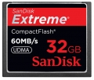

器材库 > 存储卡 > Extreme CF (32GB)

详细规格
发布日期
2009-09-16
厂家推荐价格
1,799.00 （人民币）
存储卡类型
CF
产品容量
32GB
最高存取速度
60MB/秒
工作电压
3.3V/5VV
尺寸
42.8 x 36.4 x 3.3mm
重量
11g
arondes2016-12-08 13:115 分
功能性 5.00美观性 5.00耐用性 5.00性价比 5.00
产品图 / 样片
闪迪 Extreme CF (32GB)